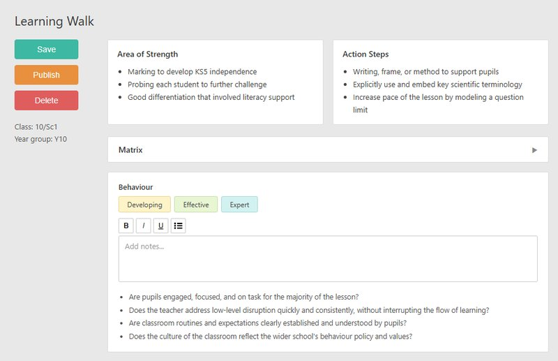

The signal
ProgressTeaching helps schools observe lessons and record feedback on digital forms. Most users were teachers; they accessed the platform through tablets or phones, and had to navigate a complex UI whilst managing students. They made mistakes, got confused, and raised a steady stream of support tickets.
"We do book looks every half term but the form shows everything. Most of it isn't relevant." Teacher, Primary school
The solution
Change 1
I created dynamic forms, showing only relevant sections depending on the context.
Why I did this: Teachers saw every section on the form, even when only some applied to their observation type. They had to mentally filter what was relevant while managing a classroom. Conditional logic removed that decision entirely.
Change 2
I added tooltip info directly to sections that teachers would fill out.
Why I did this: The guidance teachers needed lived in the Matrix, a large reference table at the top of the form. To check it, they had to scroll away from the section they were filling in, find the right row, then scroll back. Inline help text put the guidance next to the field.
Change 3
I moved the most important component to the top by default.
Why I did this: Before starting an observation, teachers needed to know what the person being observed had been working on, so they could look for evidence of progress during the lesson. That context was buried near the bottom of the form. Moving it to the top meant they had it before they started.
The outcome
72%
reduction in form-related support tickets
From ~18 per month down to fewer than 5, tracked in Salesforce over 4 months and sustained.
Reflection
The simpler forms worked for teachers, but the setup had become harder for school administrators. Conditional logic and help text needed configuring, and most schools couldn't do it without support. That meant I was personally setting up forms and making adjustments whenever schools needed changes.
If I were doing this again, I'd map out every user who touches the system before designing, not just the one complaining.